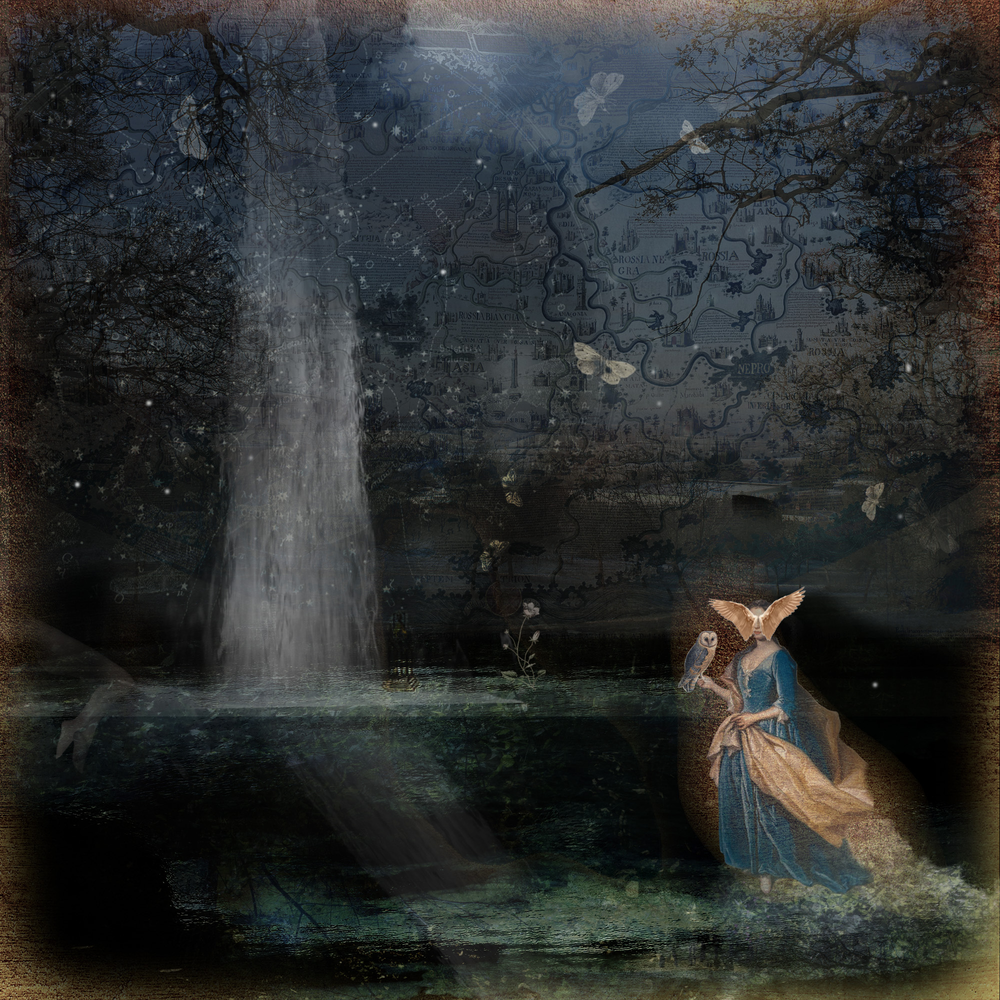
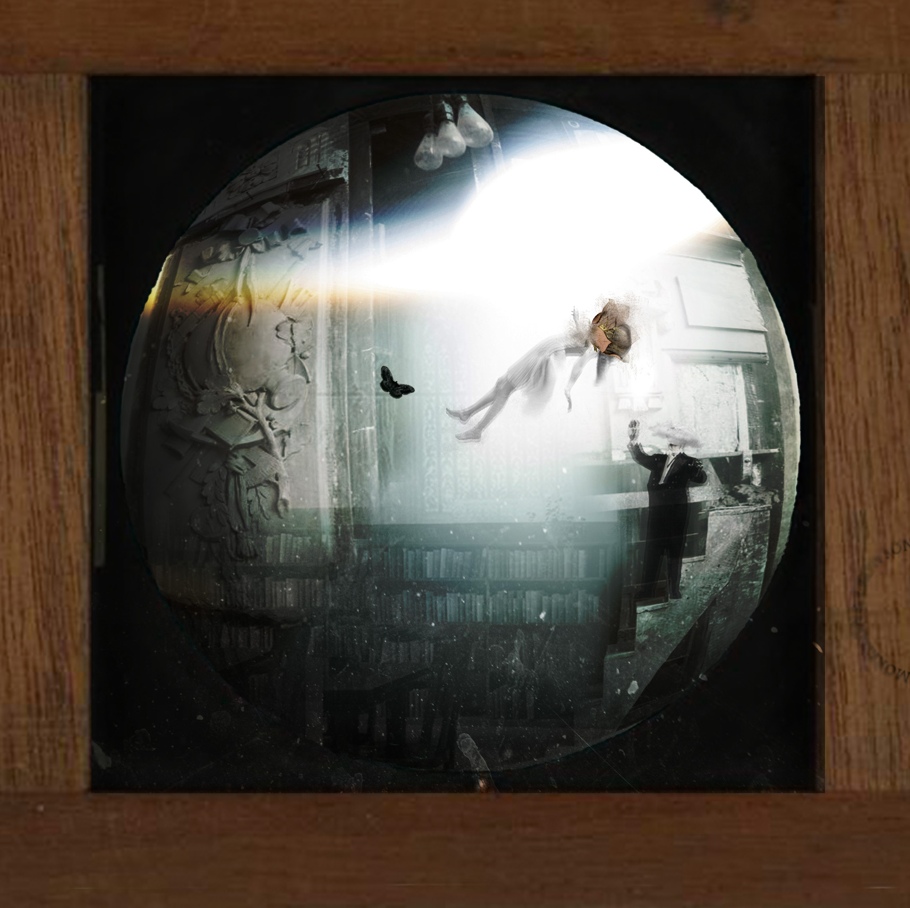
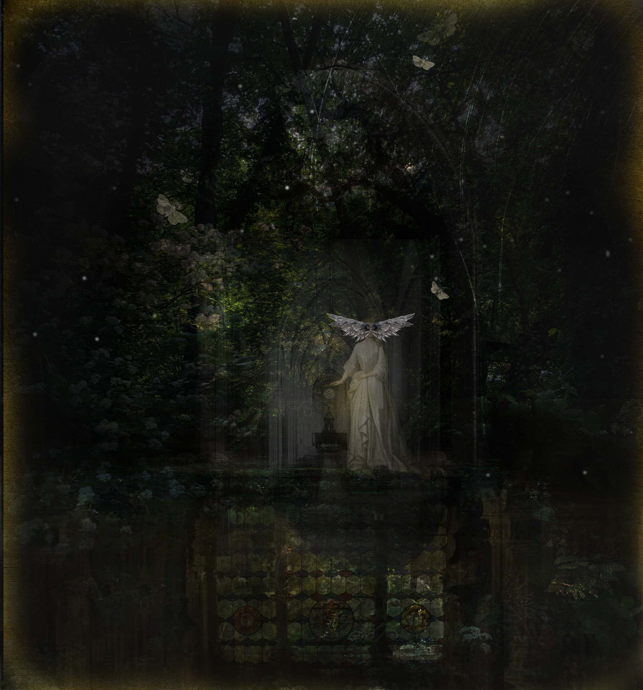
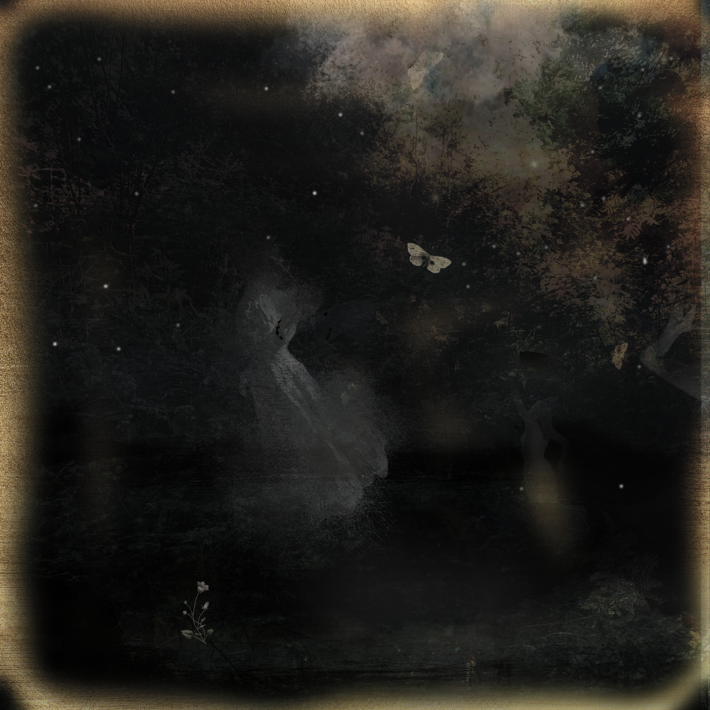

Scroll
To be preserved is not a synonym for free.
Scroll


Minor Deities were a series of collages shown as Victorian 'Magic Lantern' slides in Hereford in 2023. They are imagined household gods, wayside-shrine presences, the half-glimpsed things that linger in spaces officialdom has stopped looking at closely.
representations &c. borrows the voice of the Victorian catalogue entry. The &c. admits existences beyond the label which we cannot list. It gestures to the plant that outgrows its pot and blurs boundaries: the notes classification cannot hold.
under glass is the living thing — a memory preserved by being fixed in a point in space. But the work questions whether to be seen is also to be known. To be preserved is not a synonym for free.
The collages use traditional portrait images and transform them. A Victorian portrait was never a neutral record. It encoded social position, gender, propriety, wealth — the values of whoever commissioned it. It shows only what was classified and what the system valued enough to keep.

The lantern slide transfixes time: pins a moment, fixes it under glass, projects it to an audience who call it true and write it into histories. This work counter-balances that, evoking Lefebvre's half-glimpsed forgotten spaces — the wayside shrine, the overgrown spring, the local deity not quite erased. These are the residual spaces the official image cannot fully contain. They echo Massey's relational space: images from different times and registers are layered, because space and time are constellations of relation rather than fixed coordinates.

the eggshell bones of tiny things are lost
Sentences are cardamom,
their aromatic seed dispersed
in words just as imago's wings
unfurl to skeletons of leafy veins.
This world's a vast electrograph.
It spins to shine and so outrun
the crawling night. Inside its rock
the eggshell bones of tiny things are lost

The thinking in these slides fed directly into five questions contributed to Humanity's Last Exam, a benchmark designed to test what current AI cannot answer. The questions passed extensive peer review. Humanities scholars, and women working at small arts colleges, were almost entirely absent from the contributor list. If humanistic thinking is missing from the tests by which AI capability is measured, do we risk creating a closed, impermeable dataset — a narrow representation of space which becomes fixed in our shared social experience?





A poem written at the blurred edges of past/present/future
Imagine you're a labyrinth, your veins
stone passages draped velvet-wet with moss.
You hear the ring of footsteps, then these stop
and voices whisper as they find a key
that turns into a snatch of song, a breeze
of fade and shimmer squeezing to become
a wing-like thing that scrapes at hardwood
doors. An amber warmth – a breath – a flare
unlocks a box where secrets carved from games
of chance are trapped in spotted maps of mirror glass.
And then, uncertain candle-shadows drip
their molten wax on golden threads that lead
to yet another wall. Dear Visitor,
what brought you to these lairs of fractal spaces
built up over years, secreting spiral
trails which split and merge like pools of liquid
mercury. I offer – what? An arch
of palimpsests, a history, a vague
attenuated frayed half-world where past
imperfect paper monsters fold themselves
into the safety of this – passé simple – abyss.
Imagine you are a labyrinth, Sarah-Jane Crowson. First published in Sugar House Review. Watch the accompanying animation: youtu.be/uxJn2CTUk-U
Further work can be found under glass, including orchids, a Victorian sewing box and terraria filled with palms and moss acting as a poetic data physicalisation and visual metaphor for the practice of care and a critical reflection on when data becomes containment as well as classification.
With thanks to Ewan Morrison, critical friend and collaborator throughout the development of this work.